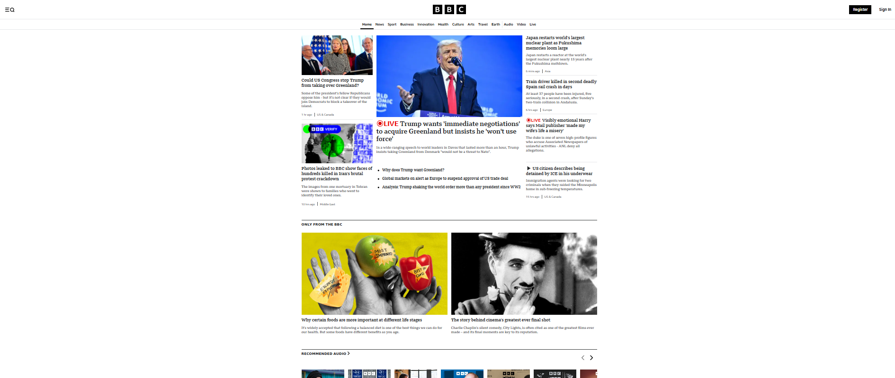

"Nothing isImpossible"
Drudge report is a simple website that was created in 1990s and kept its original design ever since. Explore what we think could be done to bring it up to modern accessibility standards!

The BBC is a highly popular British news site, so it stands to reason it is a great example of accessible design. Explore why we think so!